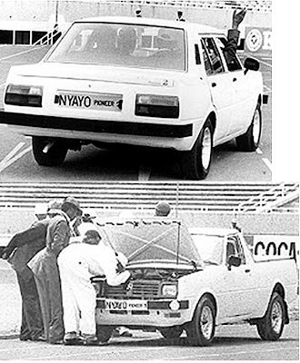
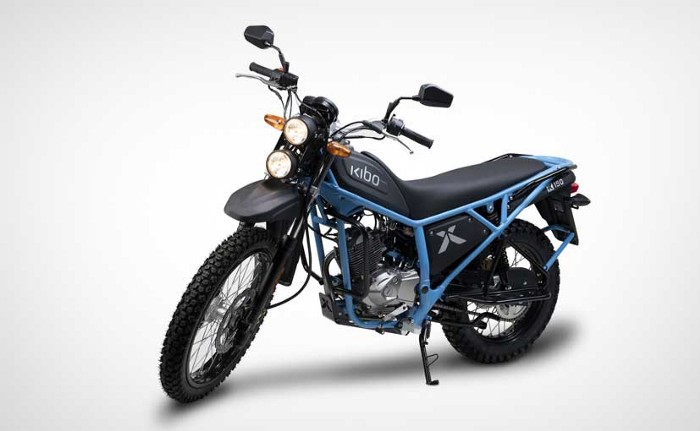
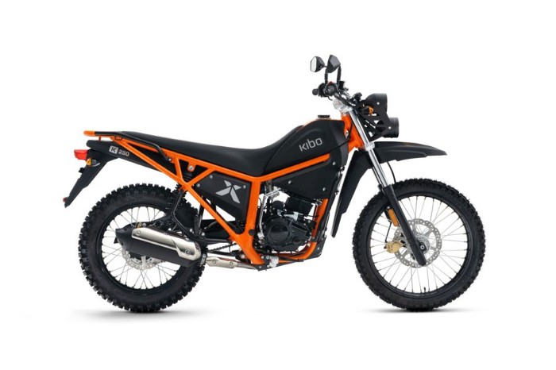
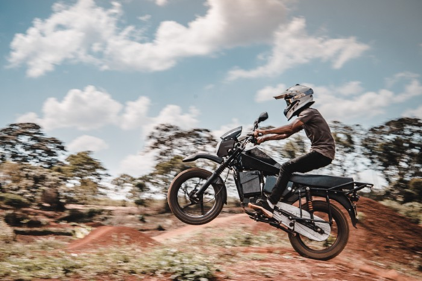
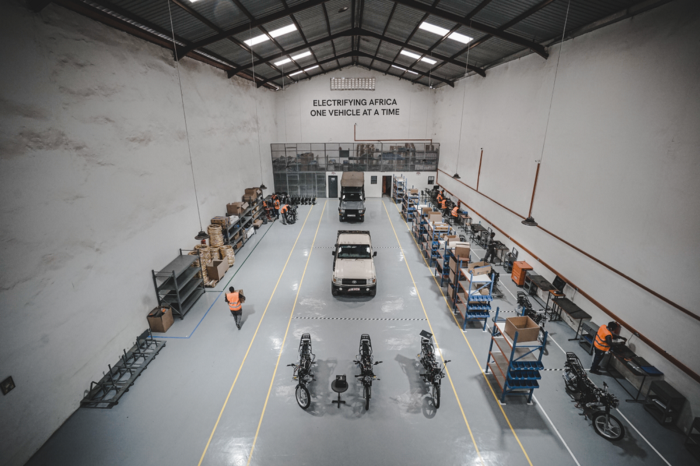

“Kenya’s hunt for a locally manufactured vehicle is synonymous to the world’s languid quest for a flying car.”
When Kenya obtained its independence in 1963, It put a lot of focus on the manufacturing sector owing to theories that claimed its importance in the economic development of any nation. One of these theories was Kaldor’s growth laws which proposed that economic growth and enhanced standards of living were positively correlated with national industrial activity. Nicholas Kaldor suggested that growth in GDP was positively related to growth in the nation’s manufacturing sector. He also suggested that the productivity of the non-manufacturing sector was associated with growth in manufacturing. Kenya’s rapid expansion of its manufacturing sector however stagnated in the 1980s owing to factors such as:
- Shortages in hydroelectric power
- High energy costs
- Dilapidated transport infrastructure
- Dumping of cheap imports
Currently, Kenya is the most industrially developed nation in East Africa and as of 2020 had the third-largest economy in Sub-Saharan Africa, coming behind Nigeria and South Africa. However, manufacturing only counts for 6% of the GDP, a statistic that when coupled with similar observation in other countries raise questions to the manufacturing theories propagated by economists like Nicholas Kaldor. However, most economists still agree that manufacturing still plays a critical role in the economic growth of a nation. Kenya, through its Vision 2030 agendaplans to increase its contribution to the GDP by at least 10% per annum.
The Automotive Industry in Kenya
The Kenyan automobile industry is perhaps the country’s most opinionated industry that has struggled for years to produce a locally manufactured vehicle since the Moi era. With Kenya being an entry point into the greater East and Central Africa, A local vehicle manufacturing industry would serve not only Kenya but also its immediate neighbors. Such an industry would provide a much-needed boost to all other manufacturing industries in the region. However, free-market economics, energy inadequacies, and dilapidated infrastructure have stalled the emergence of such an industry.
The current Automotive industry in Kenya is primarily involved in the assembly, retail, and distribution of motor vehicles. Free market economics enabled the flourishing of imported second-hand vehicles, mainly from Japan and the United Arab Emirates. Some of the major retailers include:
- Toyota East Africa/Toyota Kenya
- General Motors East Africa (GMEA)
- DT Dobie.
- Beiben Trucks — Nelion Trading Ltd
- Transafrica Motors Ltd (FAW & IVECO)
Vehicle assembly is also a major part of the Kenyan automotive industry with the major assemblers being:
- Kenya Vehicle Manufacturers (KVM) — Also Assembles for Hyundai Motor Corp and Peugeot S.A.
- General Motors East Africa
- Honda Motorcycle Kenya Ltd.
- Associated Vehicle Assemblers Ltd. (Largest Assembler in Kenya[10]) Also Assembles for Toyota (East Africa)/ Toyota Kenya Ltd (TKL ))
- TVS Motors Kenya.
- DT Dobbie for Volkswagen.
These imported second-hand vehicles appeal to a majority of the market which is best explained by the low purchasing power of the residents. With the assemblers and importers having a neck-tight grip on the industry, any advances by the government to promote locally manufactured vehicles have been met with fierce resistance. However, Vehicle Manufacturing has started to grow in Kenya with both locally owned manufacturing businesses and manufacturing from international corporations.
Starting with the oldie, The Nyayo Pioneer, here is a least of the manufacturers who have made attempts at vehicle manufacturing in Kenya:
1. The Nyayo Pioneer

In 1986, the then president of the republic, Daniel Arap Moi, asked sked the University of Nairobi to produce a vehicle, ‘however ugly or slow it may be’. The result? 5 prototype cars that attained a maximum speed of 120 km/hour and this success swept the nation in frenzy at the prospects of one day being a major auto manufacturer in Sub-Saharan Africa. The saloon cars performed quite well under tests and looked decent enough to be driven on the roads and consequently, The Nyayo Motor Corporation was established to mass-produce these cars. The car parts were either produced at military bases or at the Kenya Railways Central Workshops. And in 1990, President Moi launched three new Nyayo cars at the Kasarani Sports Complex.
This project, however inspiring it was, was cut short on its tracks when the government couldn’t raise the required Ksh 7.8 billion for the establishment of the 11 plants needed for mass production. The Nyayo Motor Corporation was later rebranded Numerical Machining Complex Limited, manufacturing metal parts for various local industries. The dream died as quickly as it was born.
2. Mobius Motors
When British entrepreneur Joe Jackson noticed the incapability of imported vehicles on the African terrain while working with a micro forestry social enterprise in rural Kenya, he embarked on developing a rugged, affordable vehicle to improve transportation around the country, especially in rural areas. In 2010 Mobius Motors Kenya Ltd was incorporated in the United Kingdom and registered in Kenya a year later.
After 10 months of research and development with a small team, the Mobius I prototype was produced. The simply designed Mobius I was produced when the company operated under a small shed in Kilifi on the Kenyan coast .
After acquiring external funding and relocating to Nairobi, Mobius Motors started the design of its second prototype which went into production, the Mobius II. The Mobius II employed minimalistic design, sticking to basic functionality and lacking such basic functionalities of modern cars as power steering, door handles, GPS navigation, and glass windows. However, the Mobius II was well received and all the 50 cars produced were sold out by 2016.

A new version of the Mobius II was released in 2019 and was set to address some of the issues with the former version including power steering, glass windows, lockable doors, and an infotainment system. Some of the specs of the new Mobius II include:
- a tare weight of 1650 kg and maintains the 625 kg loading capacity of the first generation
- 4-cylinder Inline petrol engine of 1798 cc
- 133 horsepower at 5600 rpm
- Maximum torque of 182 Nm
The price of the Mobius II ranges from Ksh. 1.3 million to Ksh. 1.6 million.
Late 2021, starting at a price of KES 3,930,000 Mobius announced a brand-new Mobius III with an even slicker design and superior features including:
- 6-speed automatic transmission
- 214 horsepower
- 320 Nm of torque

However, Mobius III has been met with mixed reactions as several allegations have sprung up questioning the authenticity of the model. Several media outlets and creators have called on Mobius III’s striking resemblance to the Chinese model, BJ40. The same resemblance to the BJ40 was also noticed in the Nigerian Car IVM40. This criticism of rebadging a Chinese car has further raised questions among Kenyans including whether the company is truly Kenyan and whether the Mobius III is really made in Kenya.
3. Kibo Africa Limited
Like Mobius Motors’ founder, Kibo Africa Limited founder, Huib Van De Grijspaarde, also saw the rugged African terrain as a niche in the mobility sector. With the ambitious objective of providing safe and reliable mobility for everyone, Kibo Africa Limited was launched in 2011.
In 2017, Kibo launched the first bike designed in the Netherlands, assembled in Kenya. The Kibo K150. With a load capacity of 250kg, the K150 targeted doctors, aid workers, and cargo carriers transporting baggage. Some of the most praised features of the bike were its high ground clearance, dual-sport tires, and aesthetic look.

The K150 was quickly followed by K160 and the K250. This majorly improved the performance of the first Kibo bike with K250 being the latest. Some of its specs include:
- 5-speed transmission
- 200 mm ground clearance
- 10.4L fuel capacity
- Maximum torque of 20 Nm at 5200 rpm
- 250.2 cc Engine capacity
- 154 kg Kerb weight

Kibo currently operates different retail centers across the country with its main offices in Nairobi.
4. Opibus
Being a champion for sustainable mobility, Opibus definitely makes it to the top of my list. Founded by Filip Gardler in 2017, Opibus started out doing electric vehicle conversions for fleet vehicles such as light trucks, public transport, and buses. This was the result of a research project at one of Sweden’s top technical universities with a mission to implement electric mobility in emerging markets. Kenya was an ideal location for the headquarters owing to its fast-growing economy and the growing amount of used vehicle imports which made electric conversions sensible.
In 2021 Opibus launched their first electric motorcycle which was fully developed and built in-house in Kenya. This motorcycle targeted the bodaboda drivers as most two-wheelers in the country are bodaboda riders. An outstanding feature of the bike was the dual battery containment which increased the range to 200km. It also reduces downtime during charging as the empty battery can simply be swapped with a full one at a station. Some of the specs of the motorbike include:
- 160 km Range.
- 150kg Payload
- 90 kph top speed
- 185 Nm torque

Early this year, Opibus took Kenyans by surprise when they showcased their first fully electric bus manufactured in the country. The bus had a top speed of 85km/hour and a range of 120km. Its other features include:
- 225 kW of Power
- 706 Nm of Torque
- Fastest Charging Time of 1 hour
To fast-track the transition from ICs, Opibus is planning an expansion of its charging stations within Nairobi. Coupled with KPLC's plan to also increase electric charging stations, this will make electric mobility a more accessible and affordable option for the community members.

Into The Future
Kenya stands to be a key manufacturing center for the Sub-Saharan market should it continue investing in the sector. The mobility sector will definitely see more startups in the coming years and hopefully, with government support, they’ll turn out as major corporations in the region.
As a majority of the founders of the companies listed above are foreigners, it implies that foreign investment plays a crucial role in Kenya’s manufacturing future. This is mainly because most Kenyan entrepreneurs currently do not have the financial assets for the establishment of large-scale factories and a majority have little to no experience in the mobility industry.
I am very excited to see this future pan out and I plan to track its developments along the way. Of special interest to me is sustainable mobility and I hope more startups will spring up in this sector and play role in making Kenya a sustainable nation.
As part of my sustainable mobility interest, I will be writing more on how sustainable mobility technologies work, so if you’d like to read more on that make sure to like and subscribe.
References
https://en.wikipedia.org/wiki/Economy_of_Kenya#Industry_and_manufacturing
https://en.wikipedia.org/wiki/Automotive_industry_in_Kenya
https://en.wikipedia.org/wiki/Nyayo_Car
https://aada-african-car.blogspot.com/2009/04/nyayo-pioneer.html